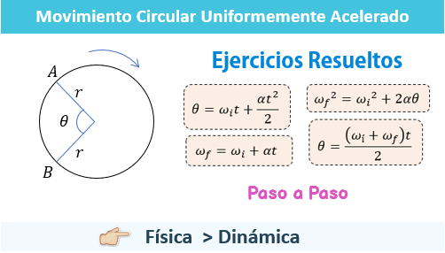

En cinematica la trayectoria o movimiento circular (también llamado movimiento rectilíneo circunferencial)
es el que se basa en un eje de giro y giro constante, por lo cual la trayectoria es una circunferencia. Si además,
la velocidad de giro es constante (giro ondulatorio), se produce el movimiento circular uniforme, que es un caso
articular de movimiento circular, con radio, centro fijo y velocidad angular constante.
En cinematica la trayectoria o movimiento circular (también llamado movimiento rectilíneo circunferencial)
es el que se basa en un eje de giro y giro constante, por lo cual la trayectoria es una circunferencia. Si además,
la velocidad de giro es constante (giro ondulatorio), se produce el movimiento circular uniforme, que es un caso
articular de movimiento circular, con radio, centro fijo y velocidad angular constante.
En el movimiento circular hay que tener en cuenta algunos conceptos básicos para la descripción cinemática y dinámica del mismo:
- Eje de giro: es la línea recta alrededor de la cual se realiza la rotación, este eje puede permanecer fijo o variar con el tiempo pero para cada instante concreto es el eje de la rotación (considerando en este caso una variación infinitesimal o diferencial de tiempo). El eje de giro define un punto llamado centro de giro de la trayectoria descrita (O).
- Arco: partiendo de un centro fijo o eje de giro fijo, es el espacio recorrido en la trayectoria circular o arco de radio unitario con el que se mide el desplazamiento angular. Su unidad es el radián (espacio recorrido dividido entre el radio de la trayectoria seguida, división de longitud entre longitud, adimensional por tanto).
- Velocidad angular: es la variación del desplazamiento angular por unidad de tiempo.
- Aceleración angular: es la variación de la velocidad angular por unidad de tiempo
En dinámica de los movimientos curvilíneos, circulares y/o giratorios se tienen en cuenta además las siguientes magnitudes:
- Momento angular: es la magnitud que en el movimiento rectilíneo equivale al momento lineal o cantidad de movimiento pero aplicada al movimiento curvilíneo, circular y/o giratorio (producto vectorial de la cantidad de movimiento por el vector posición, desde el centro de giro al punto donde se encuentra la masa puntual).
- Momento de inercia (I): es una cualidad de los cuerpos que depende de su forma y de la distribución de su masa y que resulta de multiplicar una porción concreta de la masa por la distancia que la separa al eje de giro.
- Momento de fuerza (M): o par motor es la fuerza aplicada por la distancia al eje de giro (es el equivalente a la fuerza agente del movimiento que cambia el estado de un movimiento rectilíneo).
Video que te puede ayudar a entender mejor
